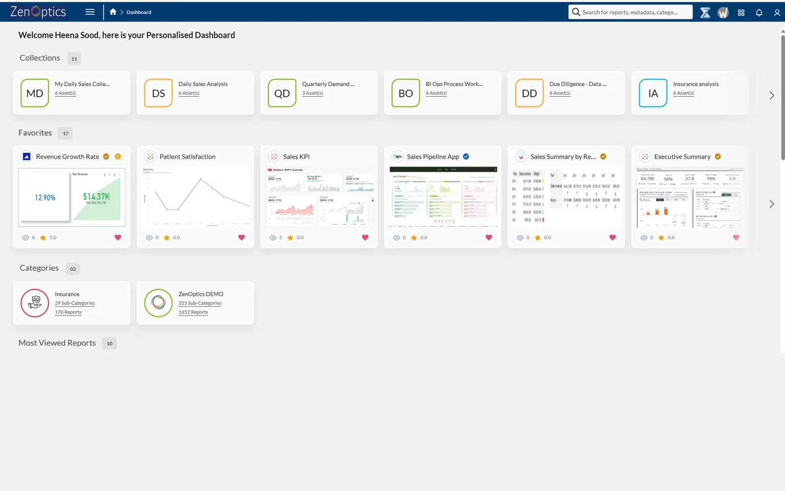
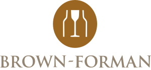
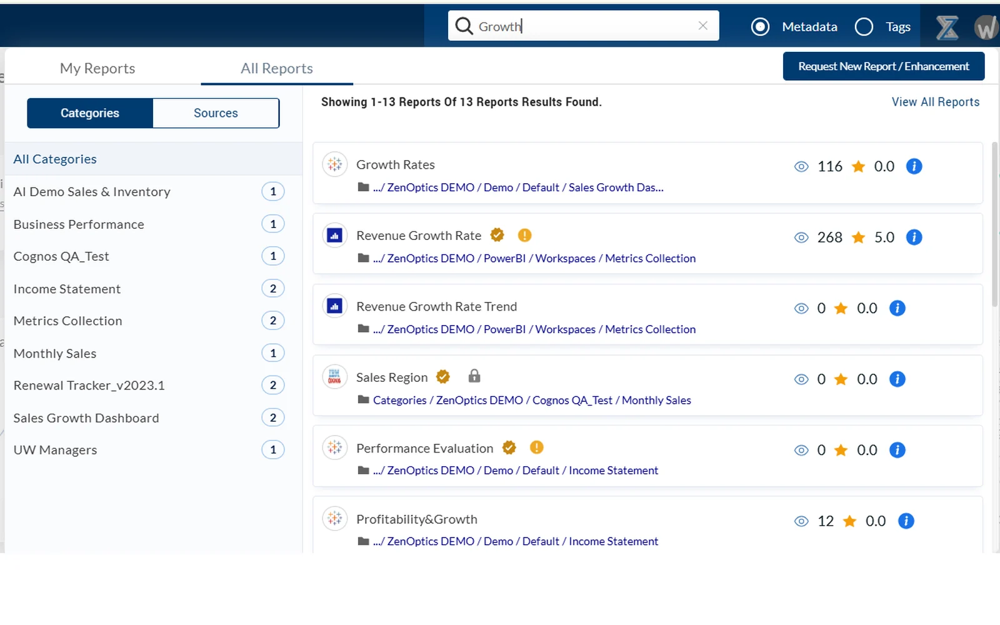
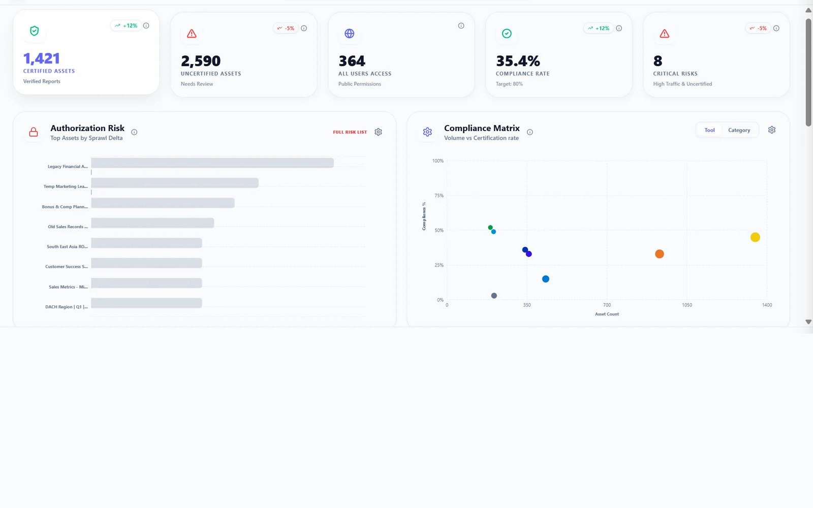
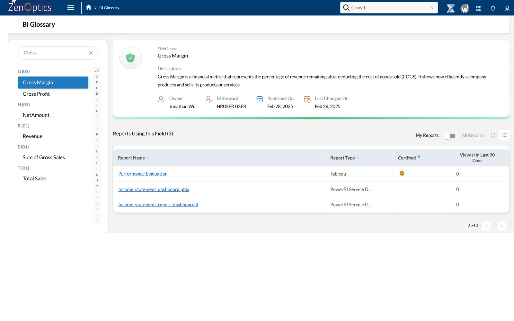
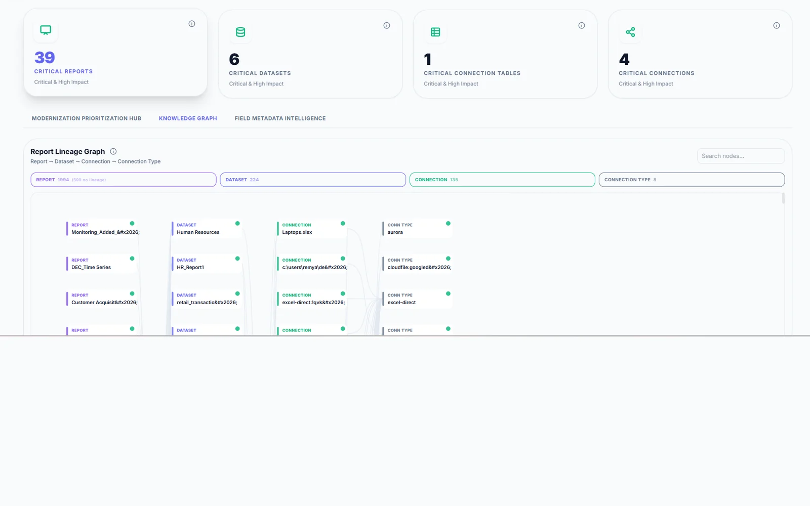
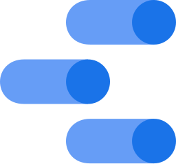
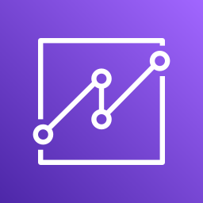
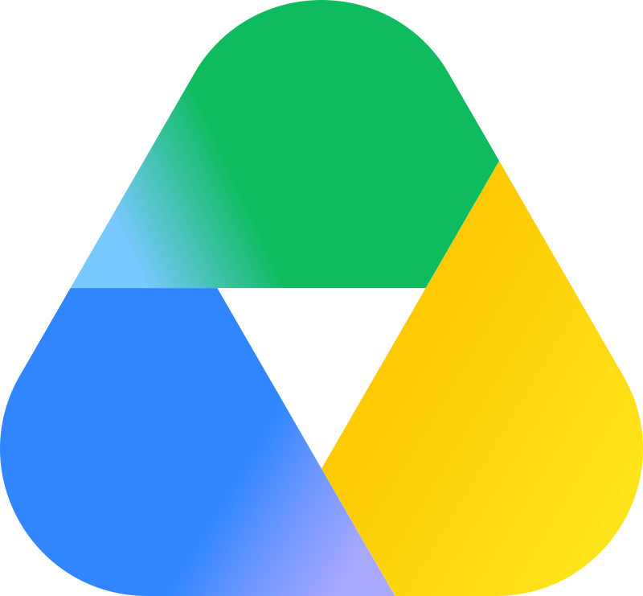

Atlas | Know
The system of record for enterprise analytics
Find the approved report, see who owns it, and know which KPI definition to use. Atlas brings reports, dashboards, and KPIs from connected BI tools into one governed catalog. Business users can find trusted analytics, and BI teams can manage certification, ownership, and changes.

Trusted by



One place to find and govern analytics across BI tools
Atlas catalogs reports, dashboards, and KPIs from connected BI platforms. It gives business users one place to find certified analytics and helps BI teams manage ownership, definitions, and certification across tools.
How Atlas works alongside your data catalog
Atlas focuses on the reports, dashboards, and KPIs people use to make decisions. It helps users find the approved version, see who owns it, and understand how it should be used.
How Atlas works
Atlas operates as a centralized analytics metadata service and governance engine. Its core components ingest, catalog, govern, and surface analytics assets across the enterprise.
-
Ingest
Connect Atlas to supported BI tools and other sources to bring available analytics metadata into the catalog.
-
Catalog
Index reports, dashboards, and KPIs from connected sources. Bring together available definitions, lineage, and usage information alongside ownership and certification details.
-
Govern
Assign ownership, review reports and KPI definitions, and certify the assets teams should use.
-
Surface
People search one place for certified analytics, whatever tool built them.
What Atlas includes
-
BI Portal
Search across connected BI tools from one place. See a report’s source, owner, and certification status before choosing which version to use.
-
Analytics Catalog
Atlas catalogs dashboards, reports, and metrics across the enterprise. View available definitions, ownership, lineage, and usage information for cataloged reports, dashboards, and KPIs.
-
Analytics Governance
Certification, approval, and change workflows let teams define authoritative metrics, certify dashboards, and assign accountability.
-
Smart Connectors
Connect Power BI, Tableau, Qlik, SAP BusinessObjects, Looker, Microsoft SSRS, and more. Explore connectors and integrations
-
Analytics Automation
Group reports and dashboards for recurring work, schedule refreshes for supported assets, and launch the collection in one click.
-
Analytics Collaboration
Leave comments and feedback on reports and dashboards so questions and suggestions stay with the asset they refer to.
Single interface for analytics
Improve access to cross-platform information assets
Search for a report across connected BI tools and see its certification status, owner, and source in the results. For example, when several versions of a sales dashboard appear, users can identify the certified version before opening it.

Governance by design
Improve trust with consistency and standardization
See which reports and dashboards are certified, review ownership and usage, and identify assets that need attention. BI teams can use this information to review duplicates and decide which reports to keep, consolidate, or retire.

Analytics catalog and KPI management
Define, track, and govern your enterprise metrics
Document KPI definitions, assign owners, and track certification status. When teams use different definitions for the same KPI, they can check the catalog for the approved definition and see who maintains it.

Usage intelligence and data lineage
Understand how analytics are used and where data flows
Review available usage data to see which reports teams rely on and which may be candidates for retirement. Where lineage is available, see how source datasets connect to downstream reports and identify which reports may be affected by a change.

Who Atlas is for
Business users
Find the certified report, check who owns it, and see which KPI definition to use.
Analytics teams
Review usage and ownership to identify duplicate or low-use reports and decide what to maintain, consolidate, or retire.
Data and analytics leaders
Track ownership and certification across connected BI tools and identify where governance needs attention.
Customer results
GAP Group had more than 1,600 reports across multiple systems. With ZenOptics, it created a central place to find and access reports and improved governance across the report release process.
Bimbo Bakeries USA eliminated 25 separate SharePoint sites and created one manufacturing analytics experience across 53 bakeries. Report discovery time improved by 5 to 10% for bakery teams and about 5% for the Operational Excellence team.
“ZenOptics helped improve our teams’ productivity by enabling them to work more efficiently, consistently, and with trust in their reporting.”
One platform, three layers
Atlas provides the governed analytics foundation for the ZenOptics Decision Intelligence Platform.
-
You are here
Atlas | Know
Catalog, certify, and govern reports, dashboards, and KPIs.
-
Nexus | Understand
Give AI the definitions and relationships it needs to interpret analytics.
-
Maestro | Act
Run governed workflows and capture how decisions were made.
Explore Atlas connectors and integrations
Atlas connects to supported BI platforms and other enterprise tools. Available capabilities vary by connector, including asset indexing, usage data, and lineage.
Featured integrations
- Power BI
 SAP BusinessObjects
SAP BusinessObjects- Microsoft SSRS
Business Intelligence and Analytics
- Power BI
- Qlik Sense
- Qlik Sense Cloud
- QlikView
- SAP BusinessObjects
- SAP Analytics Cloud
- Microsoft SSRS
 IBM Cognos
IBM Cognos- Oracle Analytics Cloud
- OBIEE
- Oracle Fusion Data Intelligence

Google Data Studio
Amazon QuickSight Epic Hyperdrive
Epic Hyperdrive
Data Warehouse and Database
- Google BigQuery
 Azure Synapse
Azure Synapse- SAP BW
- SAP HANA
- SQL
 SQL Server Database
SQL Server Database- Oracle Database
Data Catalogs
Atlas catalogs analytics assets. These tools catalog data assets, and Atlas connects to them.
- Databricks Unity Catalog
Collaboration
 Microsoft Teams
Microsoft Teams Microsoft SharePoint
Microsoft SharePoint- Microsoft OneDrive
 Atlassian Jira
Atlassian Jira
Google Drive- Dropbox
Document Management and Storage
- Amazon S3
- Microsoft Purview
- Network Drives
Applications

See how Atlas works across your BI tools
See how to find the certified version of a report, check who owns it, and identify reports worth reviewing for retirement.